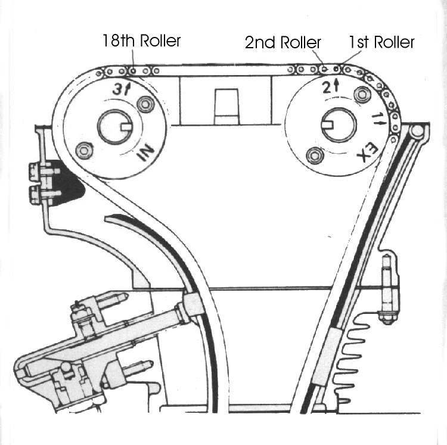
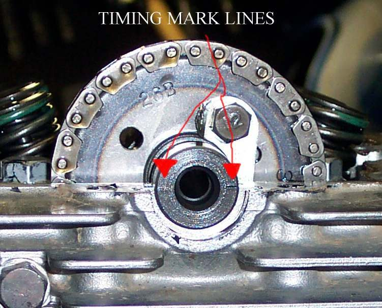
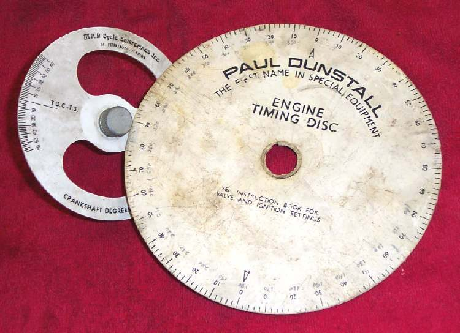
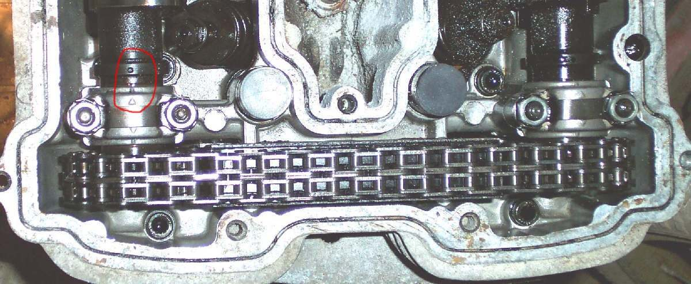
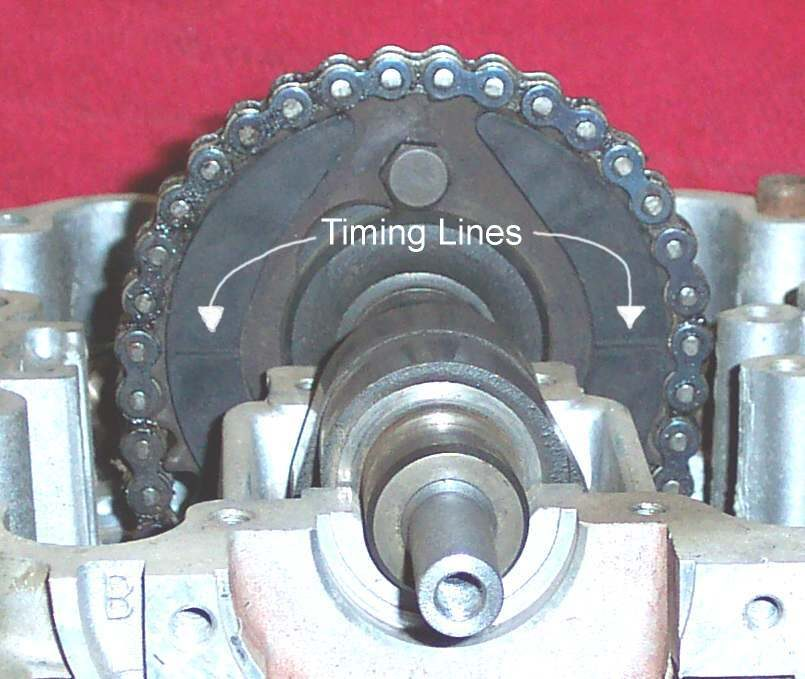
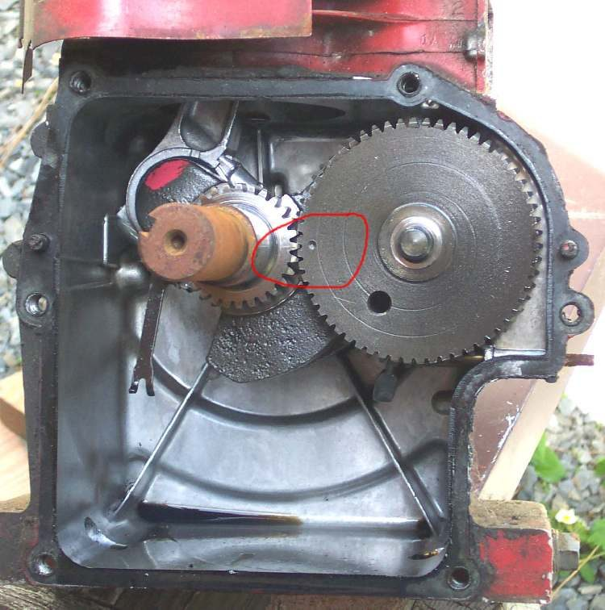

The valves must open and close at the right moment in relation to the piston. If the cam chain is a tooth out, the engine runs badly or not at all. In the worst case a valve hits the piston and bends. This page is for any job where a cam or the chain is removed. It adds to Check the cam chain and tensioner.
Safety
- Turn the engine by hand only, gently, in the direction of rotation. If it binds, stop. Binding means a valve is touching the piston or a cam is jammed on a rocker.
- Never turn the engine while the tensioner is out and the cam chain is slack, unless the manual says so. The chain can jump.
- Engine cold. Plug out.
You need
- The timing marks and the tightening order for the cam caps from the manual.
- White paint or a paint pen, a camera, a notebook.
- A new gasket or O-rings for the cover.
- New cam chain and sprockets if the chain is stretched.
Steps
Before taking anything apart:
- Bring the piston of cylinder one to top dead centre on the compression stroke. Both valves of that cylinder are closed. The mark on the flywheel or rotor lines up with the mark on the case.
- Look at the cam marks. Do they match what the manual says? If not, write down what you see. Then make your own marks with white paint on each cam sprocket and on the head next to it. On a twin-cam engine, also count the chain rollers between the intake and exhaust marks and write it down. Take photos.
On assembly:
- Set cylinder one at top dead centre on the compression stroke again.
- On a single cylinder, the cam goes in with its lobes pointing down and the chain looped over the sprocket. Slide the chain along the sprocket until the marks line up.
- On a twin-cam engine, the inlet cam is marked IN and the exhaust cam EX. Do not swap them. Line each mark as the manual shows, and check the roller count if the manual gives one. Both valves of the cylinder are slightly open at the overlap point, which is normal.
- Leave the tensioner off until the marks are lined up and the cam caps are tightened to the torque in the manual, a little at a time in the stated order, so the cam is pulled down evenly.
- Check that rocker arm ends sit on the centre of the valve stems as the caps go down.
- If the old chain is stretched, the marks may not line up exactly. Choose the tooth that brings them closest, then replace the worn chain soon.
- Fit the tensioner in its loosest position, with no tension on the chain. An adjuster fitted over-tight can break, and limits engine speed. Then release it so the spring takes up the slack.
- Turn the engine slowly through two full turns by hand. Recheck the marks at top dead centre.
- Recheck, recheck, recheck. More checks mean fewer errors.
- Fit the cover, refill with oil, start the engine and listen for noise.
Check your work
- Both the crank mark and the cam marks line up at top dead centre of cylinder one.
- The engine turns by hand with no hard spot.
- No rattle from the chain after the tensioner is fitted.
If it did not fix the problem
- Noise remains: the chain or sprockets are worn. Replace both together. On some engines the cam sprocket is part of the crankshaft. See Rattling noise from the cam chain area.
- Timing may have jumped: Ignition timing suspected wrong.
- Valve clearance set after the job: Check and adjust valve clearance.